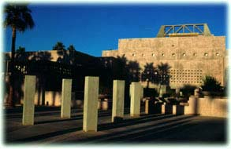
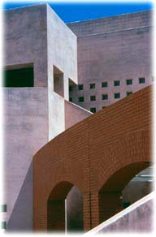
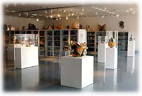

| Ceramics
Research Center
ASU Art Museum
Herberger College of Fine Arts
Arizona State University
The Permanent Collection
The
Ceramics Research Center, a national and international destination
point for the hands-on study and enjoyment of ceramics, houses and
displays the Arizona
State University Art Museum’s extensive ceramic
collection of more than 3,000 objects. The Center is a teaching
and research facility, an educational component of the Herberger
College of Fine Arts. The collection seeks to embrace representative
works by artists, or subject matter that reflects the social, cultural
and historical activities of the world. The international holdings
demonstrate the full range of technique, aesthetic approaches and
possibilities within the medium.
Over
the years, the collection has grown through acquisitions and the
support of collectors, actively collecting and exhibiting ceramics
since the late 1960s, under the directorship of Director Emeritus
Rudy Turk. Gifts came from Jay and Joyce Cooper, Stéphane
Janssen, Joanne and James Rapp and Astrid Thomas, and many others
with a passion for ceramics. In 1998, the museum was the recipient
of the Anne and Sam Davis collection of 315 modern and contemporary
ceramic works by 120 British and American ceramists, a gift that
raised the profile of the collection to national importance. When
the new Ceramics Research Center facility opened in March 2002,
Sara and David Lieberman promised their impressive collection of
international contemporary artists to the Center. Reflecting many
of the important artists, movements and accomplishments in ceramics
in the second half of the 20th century, the Lieberman gift, of unprecedented
generosity, makes the collection among the most important in its
field.
Major artists represented in the collection include Rudy Autio,
Hans Coper, Ruth
Duckworth, Shoji Hamada, Karen Karnes, Bernard
Leach, Maria Martinez, Otto and Gertrud Natzler, Lucie Rie,
Edwin and Mary Scheier, Angus Suttie, Akio Takamori, Peter
Voulkos, Kurt Weiser,
and Betty Woodman, to name just a few.
The Facility
The
Ceramics
Research Center, located just north of the ASU Art Museum’s
Nelson Fine Arts Center, provides 7,200 square feet of gallery,
storage and archival space. Every year, the Center features three
exhibitions on important movements and artists who have made significant
contributions in the ceramics field. Open storage units provide
year-round access to a majority of the museum’s permanent collection,
providing students, scholars and the general public an opportunity
to view important works from the collection. Visitors may also request
by appointment a close viewing of specific ceramic works from the
collection.
The Susan Harnly Peterson Archive
Plans are underway to develop an archive, which will be a dedicated
research area. Students, collectors, museum curators and scholars
can arrange appointments with our curatorial staff to examine specific
works in the collection and related archival material. The archive
will house the collected works of scholar Susan Harnly Peterson
comprised of research materials including books, artist correspondence,
photographs and videos from her lifelong career researching and
writing about ceramics. In the future, archival materials and works
from the collection will be available on the Internet, providing
global access to technical, critical, and historical information.
More Articles
|